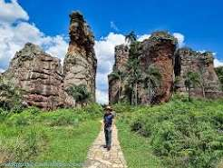
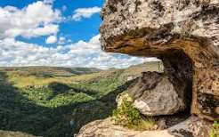
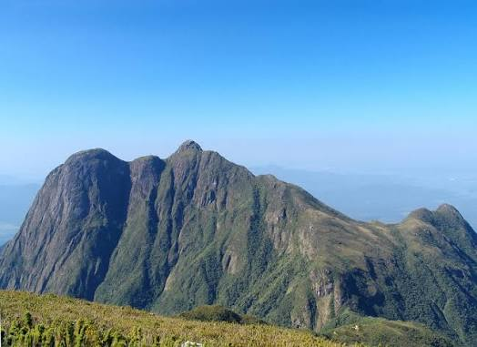

O Parque Estadual de Vila Velha, localizado em Ponta Grossa, é o principal cartão-postal geológico do Paraná. Famoso por suas formações rochosas esculpidas em arenito ao longo de milhões de anos — como a emblemática Taça —, o local une preservação ambiental e turismo sustentável. Além dos arenitos, a unidade protege as Furnas (grandes crateras com água subterrânea) e a Lagoa Dourada, oferecendo aos visitantes caminhadas estruturadas e um aprendizado prático sobre a evolução geológica e a vegetação dos Campos Gerais.

No município de Tibagi, o Parque Estadual do Guartelá destaca-se por abrigar o Cânion do Rio Iapó, considerado um dos maiores do mundo em extensão. O parque protege um bioma fascinante na transição entre o Cerrado e a Floresta de Araucárias, abrigando vegetação nativa e pinturas rupestres históricas. Seus visitantes encontram trilhas sinalizadas, mirantes com paisagens de tirar o fôlego e os "Panelões do Sumidouro", poços naturais formados pela erosão rochosa, tornando o local uma referência para o ecoturismo no estado.

Para os praticantes de caminhadas intensas e aventuras em grandes altitudes, o Parque Estadual do Pico do Paraná guarda a montanha mais alta da Região Sul do Brasil, com 1.877 metros de altitude. Localizado na Serra do Mar, entre Antonina e Campina Grande do Sul, a reserva preserva trechos contínuos e intocados de Mata Atlântica de altitude. Suas trilhas exigem preparo físico, mas recompensam os montanhistas com panoramas impressionantes de toda a cadeia de serras e da baía de Antonina.

As florestas de Araucária presentes em diversos parques do Paraná abrigam uma das espécies vegetais mais antigas do planeta. A Araucaria angustifolia surgiu há mais de 200 milhões de anos, tendo convivido com os dinossauros no Período Jurássico muito antes de se tornar o símbolo vegetal e ecológico do estado.
O Paraná concentra o maior trecho contínuo de Mata Atlântica bem preservada de todo o Brasil. A rede de unidades de conservação estaduais funciona como um corredor ecológico vital para a fauna nacional, garantindo a sobrevivência de espécies raras e ameaçadas de extinção, como o mico-leão-da-cara-preta e a suçuarana.